ConceptFundamental wave concept |
|
Information
This information is part of the Modelica Standard Library maintained by the Modelica Association.
Reference frames
Quasi static magnetic ports contain the complex magnetic flux (flow variable) and the complex magnetic potential difference (potential variable) and a reference angle. The relationship between the different complex phasors with respect to different references will be explained by means of the complex magnetic flux. The same transformation relationships also apply to the complex magnetic potential difference. However, the discussed relationships are important for handling connectors in the air gap model, transform equations into the rotor fixed reference frame, etc.
Let us assume that the air gap model contains stator and rotor magnetic ports which relate to the different sides of the machine. The angle relationship between these ports is
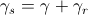,
where 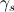 is the connector reference angle of the stator ports, 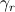 is the connector reference angle of the rotor ports, and 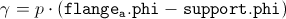 is the difference of the mechanical angles of the flange and the support, respectively, multiplied by the number of pole pairs, 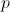. The stator and rotor reference angles are directly related with the electrical frequencies of the electric circuits of the stator, 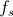, and rotor, 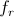, respectively, by means of:
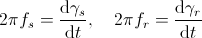
This is a strict consequence of the electro magnetic coupling between the quasi static electric and the quasi static magnetic domain.
| 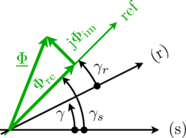 |
The complex magnetic flux with respect a stator and rotor magnetic port are equal,
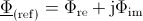,
but the reference phase angles are different according to the relationship explained above. The stator and rotor reference angles refer to quasi static magnetic connectors. The complex magnetic flux of the (stator) port with respect to the stator fixed reference frame is then calculated by
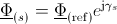.
The complex magnetic flux of the (rotor) magnetic port with respect to the rotor fixed reference frame is then calculated by
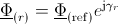.
The two stator and rotor fixed complex fluxes are related by
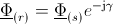.